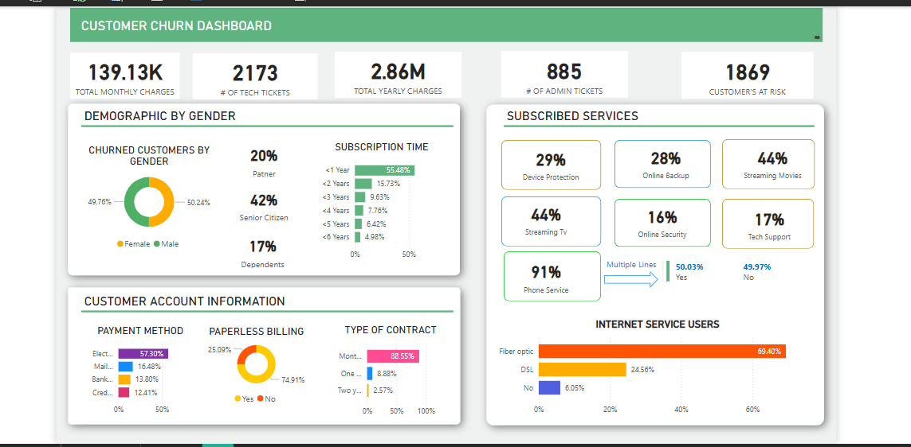

Key Insights
- Churn and Contract Type: Month-to-month contracts have the highest churn rate, suggesting that longer contracts improve customer retention.
- Impact of Charges: Higher monthly charges are correlated with increased churn, indicating cost sensitivity among customers.
- Service Type: Fiber optic service has a significantly higher churn rate compared to DSL or no internet service, which may point to dissatisfaction with this service.
- Tenure: Customers with shorter tenure are more likely to churn, emphasizing the importance of customer onboarding and early engagement.
Recommendations
- Offer Discounts or Incentives: Encourage month-to-month customers to switch to longer contracts by offering discounts.
- Address Fiber Optic Service Issues: Investigate and resolve potential issues leading to high churn rates among fiber optic customers.
- Loyalty Programs: Design programs targeting new customers (tenure <12 months) to enhance retention.
- Segment-Based Strategies: Focus on customers with higher monthly charges for targeted retention efforts.